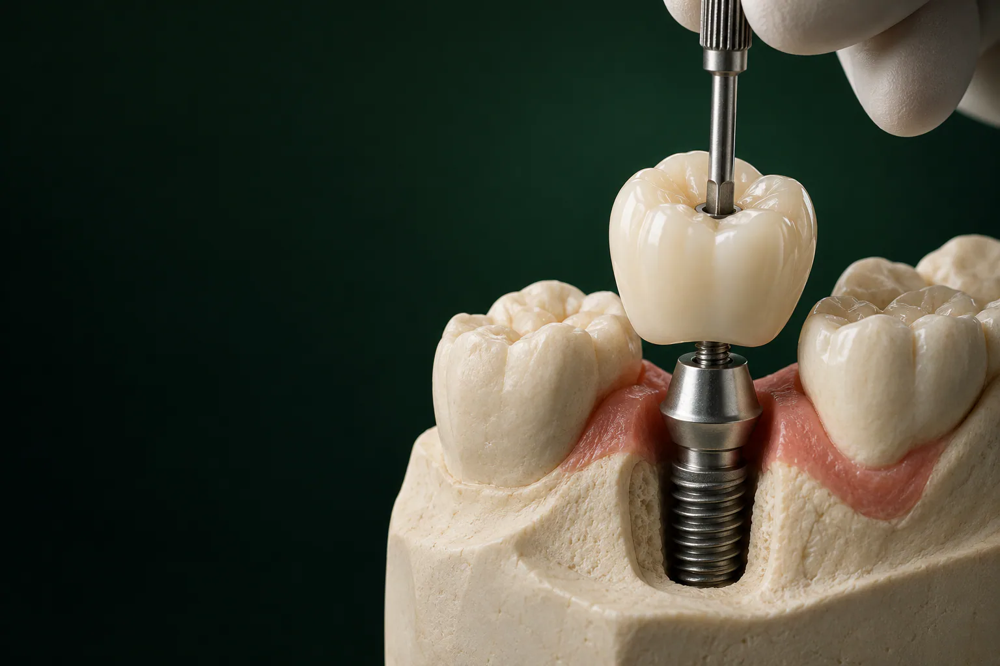

Проверка приживления
Врач осматривает зону, делает снимок или КТ зубов и проверяет стабильность импланта.

Коронка на имплант, видимая часть искусственного зуба: она крепится к импланту через абатмент и возвращает зубу форму, цвет и возможность жевать.
Имеются противопоказания. Необходима консультация специалиста.
Для тех, кому имплант уже поставили, установка коронки на имплант: завершающий этап лечения. В клинике «Умная Медицина» в пос. Удельная (Раменский округ, рядом с Жуковским) металлокерамическая коронка стоит от 27 400 ₽. Материал для жевательных или передних зубов подбирает стоматолог-ортопед, а стоимость по этапам фиксируется в плане лечения.
Постоянные коронки на импланты зубов ставят после приживления импланта, а на время лечения в зоне улыбки можно носить временную коронку. Ортопед учитывает прикус, толщину десны и то, как новый зуб будет смотреться рядом с соседними.
Имеются противопоказания. Необходима консультация специалиста.
уточняем у клиники уточняем у клиники уточняем у клиники
Коронки ставим на импланты Osstem, Straumann, Dentium и Riellen's. −10% при оплате в день консультации, рассрочка, налоговый вычет. уточняем у клиники
Имеются противопоказания. Необходима консультация специалиста.
Цена зависит прежде всего от материала. Металлокерамика стоит от 27 400 ₽: это частый выбор для жевательных зубов.
Цельноциркониевая коронка обойдётся цена уточняется: цирконий выбирают, когда важны и прочность, и естественный цвет без металла. Временный вариант CAD/CAM стоит от 13 000 ₽, основание уже входит в сумму.
На итоговую сумму влияют ещё вид абатмента, способ фиксации и то, понадобится ли временная конструкция. Поэтому точную стоимость для вашего случая ортопед назовёт после осмотра и снимка. Цена импланта вместе с коронкой: на странице имплантация зуба под ключ.
Цена указана «от», потому что работа состоит из нескольких этапов, а их набор зависит от клинической ситуации. Обычно это:
уточняем у клиники
Ортопед рассчитает стоимость под вашу ситуацию: для коронки из диоксида циркония или из металлокерамики, и распишет её по этапам в плане лечения, так что сумма будет известна до начала работы.
Имплант заменяет корень зуба, коронка: его видимую часть. Вся конструкция состоит из трёх элементов:
фото или схема
Снаружи такая коронка выглядит как обычный зуб: ортопед подбирает оттенок и форму, чтобы она не выделялась в зубном ряду. Главные отличия скрыты внутри.
Под коронкой на импланте нет живого зуба и нерва. Кариеса в такой конструкции не бывает, но десна и кость вокруг импланта могут воспалиться, если плохо чистить зону у шейки. Соседние зубы обтачивать не нужно, они остаются нетронутыми. Об обычных коронках на зубы, которые ставят на собственный зуб, рассказываем на отдельной странице.
Иначе передаётся и нагрузка. У своего зуба есть связка, которая смягчает давление при жевании. Имплант срастается с костью напрямую, и нагрузка уходит сразу в кость. Поэтому ортопед тщательно проверяет прикус: коронка не должна перегружать имплант.
Зачем нужна коронка, если сам имплант уже стоит? Без неё на этом месте нельзя жевать, а зуб на противоположной челюсти со временем выдвигается в пустое пространство, соседние наклоняются, и прикус меняется. Коронка возвращает жевание и внешний вид и удерживает зубной ряд на месте.
Материал выбирают по четырём параметрам: зона, прикус, эстетика и бюджет. На жевательные зубы приходится основная нагрузка, а в зоне улыбки важнее цвет и прозрачность. Особый случай, передние зубы на верхней челюсти: их видно при разговоре и улыбке, поэтому требования к оттенку и контуру десны здесь особенно высокие.
Металлический каркас покрывают слоем керамики. Такая коронка прочная и хорошо переносит жевательную нагрузку, поэтому её чаще ставят на жевательные зубы. Минус в том, что металл не пропускает свет: при тонкой десне у шейки может просвечивать тёмная полоска, поэтому в зоне улыбки металлокерамику выбирают реже. Стоимость: от 27 400 ₽. Подробнее о материале: на странице металлокерамические коронки.
Цельноциркониевую коронку фрезеруют из блока диоксида циркония по цифровой модели, металла в ней нет. Материал прочный, поэтому такие коронки ставят и на жевательные, и на передние зубы.
Тёмной каймы у десны цирконий не даёт: просвечивать нечему. На импланте цельноциркониевая коронка стоит цена уточняется. Подробнее о материале: на странице циркониевые коронки.
уточняем у клиники
Керамическая коронка на имплантат из дисиликата лития (E.max) пропускает свет почти как эмаль, поэтому её рассматривают для передних зубов, где важна естественная прозрачность. На жевательные зубы с высокой нагрузкой её ставят реже. О материале, на странице коронки E.max.
Пластмассовые коронки на импланты, временное решение: их носят, пока формируется десна или изготавливается постоянная коронка. В клинике временная конструкция на имплант, фрезерованная коронка CAD/CAM: её вытачивают на станке по цифровой модели. Цена: от 13 000 ₽ вместе с основанием. Подробнее: в разделе о временной коронке ниже.
Какой материал подходит для какой зоны и сколько он стоит, удобно сравнить в таблице.
| Материал | Зона | Эстетика | Прочность | Цена |
|---|---|---|---|---|
| Металлокерамика | чаще жевательные зубы | хорошая, но у десны может просвечивать металл | высокая | от 27 400 ₽ |
| Цельный диоксид циркония | жевательные и передние зубы | высокая, без металла | высокая | цена уточняется |
| Временная CAD/CAM | любая, на период лечения | достаточная на время ношения | рассчитана на временное ношение | от 13 000 ₽ |
На импланты каких систем ставим коронки. Клиника работает с системами Osstem и Dentium (Южная Корея), Straumann (Швейцария) и Riellen's (Бразилия). Коронку для импланта Штрауман, как и для любой другой системы, делают под соединение конкретного импланта: абатмент должен точно ему соответствовать. О самих системах: на странице импланты Osstem, Dentium, Straumann. уточняем у клиники
Пациенты спрашивают об этом часто. Одной лучшей коронки для всех нет: ортопед выбирает материал после осмотра и учитывает:
Например, человеку с бруксизмом на жевательный зуб и пациенту с тонкой десной на передний зуб нужны разные коронки. Что подойдёт именно вам, ортопед объяснит на консультации и сравнит варианты по цене.
Способов фиксации два. От выбора зависит, насколько просто снять коронку для чистки или ремонта.
Винтовая. Коронку вместе с абатментом прикручивают к импланту винтом, а отверстие на жевательной поверхности закрывают композитом в цвет зуба. Её легко снять: врач откручивает винт, чистит или ремонтирует коронку и ставит обратно. Под десной не остаётся цемента. Минус: на жевательной поверхности есть отверстие, закрытое композитом.
Цементная. Абатмент прикручивают к импланту, а коронку фиксируют на нём специальным цементом. Плюс: на жевательной поверхности нет отверстия. Минусы: снять такую коронку сложнее, а остатки цемента под десной могут вызвать воспаление, поэтому врач тщательно удаляет излишки сразу после фиксации.
| Винтовая | Цементная | |
|---|---|---|
| Снять для чистки или ремонта | легко | сложнее |
| Отверстие на жевательной поверхности | есть, закрыто композитом | нет |
| Цемент под десной | не используется | излишки удаляют при фиксации |
Винтовая фиксация удобна, когда важно, чтобы коронку можно было снять для обслуживания. Цементную выбирают, например, когда из-за наклона импланта отверстие для винта пришлось бы на видимую сторону коронки.
Способ крепления ортопед подбирает с учётом положения и наклона импланта, высоты будущей коронки и зоны. уточняем у клиники
Ниже, порядок работы при двухэтапной методике, когда имплант приживается под десной. Понадобится несколько визитов уточняем у клиники.
Врач осматривает зону, делает снимок или КТ зубов и проверяет стабильность импланта.
Хирург под местной анестезией делает небольшой разрез над имплантом и устанавливает формирователь. Затем ждут, пока вокруг него сформируется десна уточняем у клиники.
Снимают слепки или сканируют челюсти интраоральным сканером, подбирают цвет по соседним зубам уточняем у клиники.
Абатмент и коронку делают в зуботехнической лаборатории уточняем у клиники.
Врач проверяет посадку и цвет, устанавливает абатмент, фиксирует коронку винтом или цементом и проверяет прикус.
Ортопед смотрит, как коронка работает при жевании, и при необходимости корректирует прикус.
Сроки и цену каждого этапа врач распишет в плане лечения.
Записаться на консультациюФормирователь: небольшой цилиндр, который временно вкручивают в имплант. Десна заживает вокруг него аккуратной манжетой, и коронка потом входит в неё естественно. Установка формирователей на импланты проходит под местной анестезией и занимает немного времени.
Абатмент: постоянная опора для коронки. Он бывает стандартным (заводским) и индивидуальным: такой изготавливают для конкретного пациента, когда нужно точнее повторить контур десны или изменить наклон коронки. Установка абатмента на имплант обычно совпадает по времени с фиксацией коронки. уточняем у клиники
Постоянную коронку ставят после приживления импланта, когда он прочно сросся с костью. Точный срок врач определяет по снимку и стабильности импланта. На нижней челюсти кость обычно плотнее, поэтому ждать там, как правило, меньше, чем на верхней. уточняем у клиники
Если зубов нет на всей челюсти, порядок другой. По протоколам All-on-4, All-on-6 и All-on-8 клиника фиксирует временный адаптационный протез сразу после операции, а постоянный: после приживления имплантов.
Нужна она не всем. Ставят её по трём причинам:
На жевательных зубах она чаще не нужна: при двухэтапной методике её там обычно не ставят, десну формирует формирователь.
Временную коронку ставят отдельным этапом, и момент для него выбирает врач. уточняем у клиники
Временная CAD/CAM-коронка вместе с основанием стоит от 13 000 ₽.
Если нет одного зуба, обычно выбирают между коронкой на импланте и мостовидным протезом. Мост опирается на соседние зубы: их обтачивают под опорные коронки, даже если они здоровы. Имплант с коронкой держится сам и соседей не затрагивает.
| Коронка на имплантате | Мост на своих зубах | |
|---|---|---|
| Соседние зубы | не обтачивают | обтачивают под опорные коронки |
| Кость на месте утраченного зуба | получает нагрузку через имплант | не нагружается и со временем убывает |
| Операция | нужна установка импланта | не нужна |
| Сроки | дольше: ждут приживления импланта | обычно быстрее |
| Срок службы | зависит от гигиены, прикуса и состояния кости вокруг импланта | зависит от состояния опорных зубов |
| Из чего складывается цена | имплант, абатмент и коронка | число единиц моста |
Мост рассматривают, когда соседние зубы уже под коронками или сильно разрушены, а также если имплантация противопоказана. Подробнее: на странице мостовидный протез. Если нет нескольких зубов подряд или всех зубов на челюсти, вместо отдельных коронок рассматривают мост на имплантах или протез на имплантах.
Протезирование на имплантах планируют и проводят стоматологи-ортопеды клиники:
Импланты устанавливают стоматологи-хирурги, имплантологи Хлудневский Михаил Сергеевич и Раджабов Азамат Назирович. План лечения хирург и ортопед составляют вместе на консилиуме: заранее решают, где и под каким наклоном встанет имплант, чтобы коронка получилась правильной формы и выдерживала жевательную нагрузку.
На консультации ортопед осматривает зону, оценивает снимки, рассказывает о материалах и фиксации и составляет план с ценой по этапам. Консультация ортопеда с планом лечения: 0 ₽. Записаться можно на странице консультация стоматолога.

Главный врач, ортопед
Протезирование и восстановление зубов, протезы на имплантах
Записаться к врачу
Ортопед
Восстановление зубов и протезирование, эстетичные коронки
Записаться к врачу
Хирург, имплантолог
Имплантация, удаление зубов и подготовка к имплантации
Записаться к врачу
Хирург, имплантолог
Удаление зубов и имплантация, хирургия в сложных случаях
Записаться к врачуЗдесь публикуем только реальные отзывы пациентов о протезировании на имплантах, с их письменного согласия.
отзыв пациента
пример работы
Подробнее об условиях: на странице рассрочка и налоговый вычет.
Коронка не болеет кариесом, но десна и кость вокруг импланта требуют внимательного ухода: воспаление здесь может развиваться незаметно. Что нужно делать:
Привыкают к новой коронке по-разному: первые дни она может ощущаться как новый предмет во рту, затем это ощущение обычно проходит. Если мешает прикус, не ждите: ортопед скорректирует коронку. согласуем с врачом
Срок службы коронки на импланте зависит от материала, гигиены, прикуса и привычек, например бруксизма. Конкретного числа лет никто честно пообещать не может, поэтому важно приходить на осмотры: так вовремя заметят скол или ослабший винт.
Причины подвижности коронки бывают разные:
Что делать: не жевать на этой стороне и прийти к ортопеду. Причину определяют осмотром и снимком. Если ослаб винт или цемент, коронку подтягивают или фиксируют заново; если подвижен имплант, нужен хирург.
Если после установки коронки десна болит, кровоточит или отекает дольше нескольких дней, это тоже повод для осмотра: врач проверит прикус, посадку коронки и состояние десны.
Замена коронки на импланте возможна без удаления импланта: старую коронку снимают и на тот же имплант ставят новую. При винтовой фиксации это проще.
Зависит от зоны и прикуса: на жевательные зубы чаще ставят металлокерамику или цирконий, в зоне улыбки, коронки без металла. На импланты в клинике ставят металлокерамические коронки (от 27 400 ₽) и цельноциркониевые (цена уточняется). Окончательный выбор ортопед делает после осмотра. уточняем у клиники
Постоянную: после приживления импланта. Срок врач определяет по снимку и стабильности импланта; на нижней челюсти ждать обычно меньше, чем на верхней. уточняем у клиники
Через абатмент: переходник между имплантом и коронкой. Коронку прикручивают винтом, и тогда её можно снять для чистки и ремонта, или фиксируют на цемент. Способ ортопед выбирает по положению импланта и зоне.
Примерка и фиксация коронки обычно проходят без разрезов: ощущается давление на десну. При двухэтапной методике формирователь десны ставят через небольшой разрез под местной анестезией. согласуем с врачом
В первые дни лёгкая боль бывает: десна привыкает к новой коронке. Если боль при жевании, кровоточивость или отёк не проходят, приходите на осмотр. Врач проверит прикус и посадку коронки.
Чаще всего ослаб винт или цемент: коронку подтягивают или фиксируют заново. Реже подвижен сам имплант, это проверяют на снимке. В любом случае не жуйте на этой стороне и приходите к ортопеду.
Чтобы в зоне улыбки не было пустого места и чтобы сформировать контур десны до постоянной коронки. Она нужна не всем: на жевательных зубах её часто не ставят. Временная CAD/CAM-коронка стоит от 13 000 ₽.
Да, имплант при этом остаётся на месте. При винтовой фиксации снять коронку проще. Стоимость замены зависит от материала новой коронки и способа фиксации. уточняем у клиники
уточняем у клиники Да, если система импланта совместима. Принесите паспорт импланта или снимок: по ним ортопед определит систему и подберёт абатмент.
Металлокерамическая, от 27 400 ₽, цельноциркониевая, цена уточняется, временная CAD/CAM, от 13 000 ₽. Итог зависит от материала, абатмента и фиксации, его записывают в план лечения. При оплате в день консультации, скидка 10%, есть рассрочка, а часть расходов можно вернуть через налоговую.
Запишитесь на консультацию: план лечения с ценой по этапам
Имеются противопоказания. Необходима консультация специалиста.
Клиника «Умная Медицина. Стоматология»: Московская область, Раменский округ, пос. Удельная, ул. Громова, 10/2. уточняем у клиники
Коронку на имплант в Удельной удобно поставить жителям всего Раменского округа: клиника находится рядом с Жуковским. Рядом с клиникой: Малаховка, Быково, Ильинский, Островцы, Красково, Октябрьский и Родники; приезжают к нам и из Люберец, Раменского и Балашихи.
уточняем у клиники уточняем у клиники
Запишитесь к ортопеду: подберём коронку и зафиксируем стоимость в плане лечения.
Имеются противопоказания. Необходима консультация специалиста.
пгт Удельная, Раменский округ, рядом с Жуковским.
Ежедневно с 9:00 до 21:00
+7 495 150-36-15К нам ездят из Жуковского, Раменского, Быкова, Ильинского, Красково, Малаховки, Островцов, Люберец и Балашихи.
Перезвоним за 5 минут, подберём врача и удобное время.
Оставьте номер, администратор перезвонит и ответит на вопросы.
Подойдёт КТ, панорама, прицельный снимок или фото плана лечения из другой клиники. Врач посмотрит и ответит в течение рабочего дня. Это бесплатно.
Хирург, ортопед и терапевт осмотрят вас вместе, сделаем КТ. Консультация бесплатная, стоимость лечения врач назовёт после осмотра.
Консультацию ведут вместе
ХирургМихаилОртопедЕвгений ТерапевтАртём
ТерапевтАртёмПервый визит бесплатно
Хирург, ортопед и терапевт посмотрят ваш случай вместе и предложат два-три варианта с ценой. Оставьте номер, администратор перезвонит и подберёт время.
Скидка 10% на лечение, если оплатить его в день консультации
Перезвоним за 5 минут, ежедневно с 9:00 до 21:00.